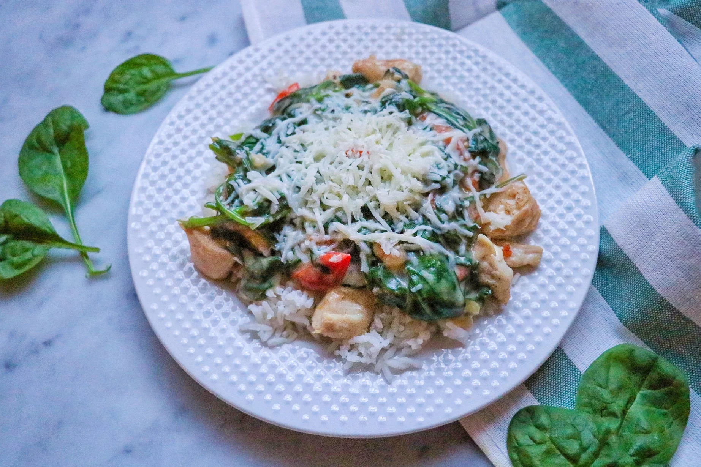

Easy Chicken Florentine
This tasty quick spin on chicken Florentine is colorful and exciting. Serve together with your choice of rice, potato, or couscous, my favorite.

Prep Time:
30 Min
Servings:
4
Yield:
4
Ingredients
Salad:
1 pound skinless, boneless chicken breast, cut into 1-inch cubes
salt and ground black pepper to taste
2 tablespoons olive oil
1 medium shallot, chopped
1 clove garlic, minced
2 medium tomatoes, chopped
1 (10.5 ounce) can condensed cream of mushroom soup
½ cup chicken broth
¼ cup sour cream
1 (10 ounce) package fresh spinach
1 cup shredded mozzarella cheese
Steps
Follow the next directions:
First Step
Season chicken with salt and pepper.
Second Step
Heat oil in a deep skillet over medium heat. Add chicken and saute until no longer pink in the center and the juices run clear, 6 to 8 minutes. Remove chicken to a plate.
Third Step
Add shallot and garlic to the skillet and cook for about 2 minutes. Add tomatoes and cook 2 more minutes. Add condensed soup, chicken broth, and sour cream; stir to combine. Add spinach and cook for 5 minutes.
Forth Step
Serve on plates and top with shredded mozzarella cheese.